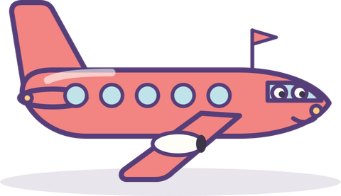
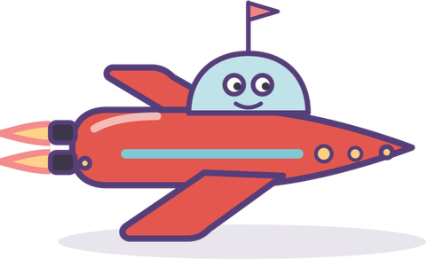
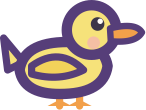
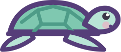
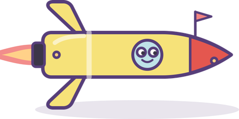

🌐 Português (Brasil)
Beepika: Carrinhos e Aviões
Barcos, foguetes e bichinhos










Beepika é um primeiro jogo tranquilo e carinhoso sobre carrinhos, aviões, barcos e o espaço para crianças de 2 a 5 anos. Monte seu próprio veículo e pé na estrada: pelo caminho, bichinhos procuram um lar — pegue-os e dê carona até a chegada, e qualquer um deles pode virar o bichinho de estimação da garagem. Não há nada para ler, nem cronômetro, e não tem como perder: cada toque responde com uma buzininha alegre, um pulinho ou um brilho.

LEVE TODOS OS ANIMAIS JUNTO
- Os bichinhos procuram um lar: eles vivem à beira da estrada, nos galhos, no céu e debaixo d'água — cada um é fácil de reconhecer e responde ao toque com a própria voz
- Pegue qualquer animal e ele pula para uma carretinha, uma jangada, uma cestinha, um aquário ou um módulo espacial; o ônibus, o avião e o dirigível levam passageiros nas janelas
- Pequenos alienígenas bonzinhos flutuam perto de cada planeta — o disco voador os puxa com seu raio de luz
- Na chegada, todos os passageiros pulam para fora e dão tchauzinho

MONTE DO SEU JEITO
- Escolha a carroceria, a cor, as rodas e um enfeite — qualquer combinação dá certo
- Personalize na oficina: motor, propulsor, aerofólio, faróis e uma festa saindo do escapamento no lugar da fumaça: confete, fogos de artifício, bolhas de sabão, corações, borboletas, notas musicais e mais
- Toque no veículo e ele faz uma manobra nova a cada vez — e, para pegar uma estrela no céu, tem um botão grande de pulo
- Um bichinho amigo mora em cada sala: na garagem, no hangar e no cais. Com um foguete, o hangar vira uma estação espacial; com um submarino, o cais vira uma base no fundo do mar

VÁ PARA ONDE QUISER
- Dirija pela floresta, pela praia, pela neve, pelo deserto e por mundos encantados
- Voe sobre cidades com monumentos famosos e viaje até cada planeta do Sistema Solar — na chegada, o planeta gira e suas luas dão voltas ao redor dele
- Navegue por rios e mares, mergulhe até recifes de coral, navios naufragados e cavernas de cristal, e guie o submarino para cima e para baixo com o dedo
- Toque no sol para transformar o dia em noite; folhas caem, arco-íris brilham e estrelas cadentes passam no céu

FEITO PARA MÃOZINHAS
- Botões grandes, só na horizontal, sem precisar ler
- Sons e uma vibração suave respondem a cada toque
- Funciona offline, em qualquer lugar — no carro, no avião, na casa da vovó
- Adequado para crianças com baixa visão: o leitor de tela VoiceOver lê os botões e os personagens
- Se o pisca-pisca incomodar a criança, ative Reduzir Movimento nos Ajustes — o jogo tira os tremores e o excesso de confete
COMO AJUDA SEU FILHO
- Movimentos precisos dos dedinhos: tocar, arrastar um bichinho, pular
- Cada toque muda algo: a criança vê o resultado do que faz
- Cuidar dos outros: bichinhos procuram um lar e a criança os leva até a chegada
- Imaginação: o próprio veículo com quaisquer peças
- Conhecer o mundo: bichinhos, mares, cidades e planetas
- Confiança: não dá para perder, sem cronômetros nem pressa

GRÁTIS PARA JOGAR, UMA COMPRA PARA TUDO
Grátis: o sedã, o caminhãozinho e o caminhão de bombeiros, todas as cores, a floresta e a praia com seus animais, o modo noturno, o clima e as estações do ano, além de uma espiadinha no hangar e no cais.
“Desbloquear Tudo” libera todos os 27 veículos — carros e veículos especiais, aviões, foguetes e um disco voador, barcos e submarinos —, todas as peças de personalização, rodas e enfeites, e todos os 46 mapas: mundos encantados, oito cidades, o Sistema Solar, mares e o mundo submarino. Compra única, compartilhada com a família pelo Compartilhamento Familiar. Sem assinaturas.

SEGURO PARA CRIANÇAS
- Sem anúncios, sem rastreamento, sem análise de dados, sem contas
- O progresso fica salvo apenas neste dispositivo; nada é enviado para nós nem para ninguém
- A compra fica protegida por uma verificação para adultos
- Nenhum link para fora do jogo
Dúvidas ou ideias? Visite a página de suporte — lemos todas as mensagens.
❤️
Somos uma família comum com dois pequenos. Minha esposa e eu criamos brinquedos para eles e compartilhamos os melhores com outras crianças, de coração.